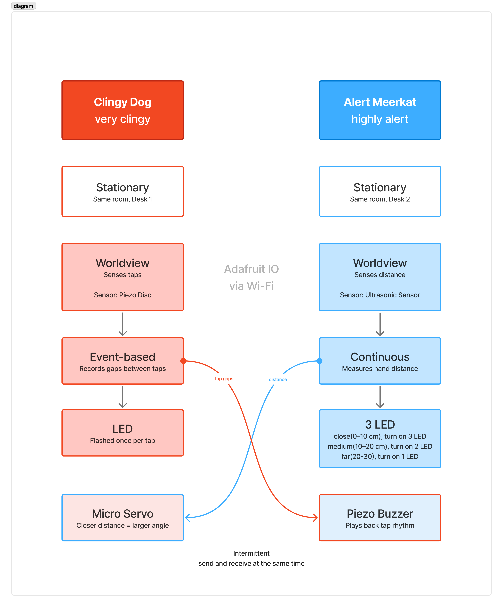
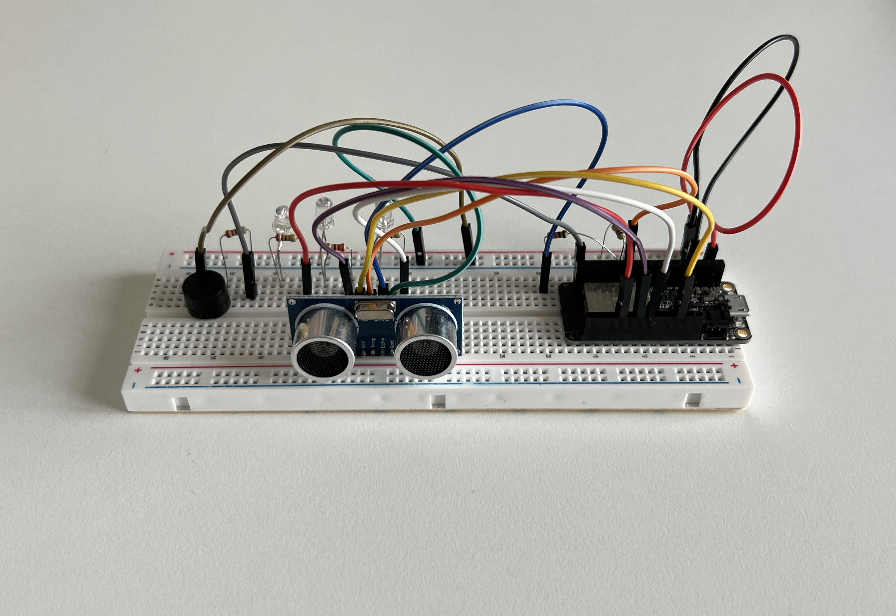

About:
Create two electronic pets: a "Clingy Dog" and an "Alert Meerkat." The Clingy Dog wags its tail when petted, while the Alert Meerkat lets out a call to act as a sentry whenever something approaches.

Clingy Dog
HOW IT WORKS: When tapped Piezo Disc, the LED lights up. Each time you tap it, the LED flashes once.
WORLDVIEW: very clingy，senses taps
SENSOR: Piezo Disc
INPUT: tap rhythm
OUTPUT: LED flashes
OUTPUT/COMMUNICATION DEVICE: Micro Servo
Alert Meerkat
HOW IT WORKS: When a hand comes close, the LCD shows the distance. When nothing is within range, it shows “---”.
WORLDVIEW: highly alert，senses distance
SENSOR: Ultrasonic Sensor
INPUT: distance
OUTPUT: LCD display
OUTPUT/COMMUNICATION DEVICE: Piezo Buzzer
How they communicate：
Clingy Dog → Alert Meerkat
Dog’s tap rhythm is sent to Meerkat.
Meerkat’s Piezo Buzzer responds to Dog’s tap rhythm.
Alert Meerkat → Clingy Dog
Meerkat’s distance is sent to Dog.
Dog’s Micro Servo responds only to Meerkat’s distance data.
Adjustments
After discussing the diagram with the Maxim in class, we found that both the Ultrasonic Sensor and the LCD need 5V, and the ESP32 Feather can't power both at the same time. So we replaced the LCD with 3 LEDs, which show the sensed distance by the number of LEDs that light up. Within 30 cm, 1 LED lights up; within 20 cm, 2 LEDs light up; within 10 cm, 3 LEDs light up.
Updated Diagram

Hardware Connection - Meerkat

Individual Testing
I was responsible for Alert Meerkat, so I tested Alert Meerkat.
1. LEDs did not light up
I moved my hand in front of the Ultrasonic Sensor, but the LEDs did not light up.
const int LED1 = 27;
const int LED2 = 33;
const int LED3 = 32;
void setup() {
pinMode(LED1, OUTPUT);
pinMode(LED2, OUTPUT);
pinMode(LED3, OUTPUT);
}
// Light up 0–3 LEDs
void showLevel(int count) {
digitalWrite(LED1, count >= 1 ? HIGH : LOW);
digitalWrite(LED2, count >= 2 ? HIGH : LOW);
digitalWrite(LED3, count >= 3 ? HIGH : LOW);
}
void loop() {
float distance = readDistance();
int count;
if (distance < 0 || distance > 30) count = 0; // too far or no echo
else if (distance > 20) count = 1; // far
else if (distance > 10) count = 2; // middle
else count = 3; // near
showLevel(count);
delay(200);
}2. LEDs flickered
The LEDs lit up in the right number based on the hand's distance, but they flickered. For example, within 10 cm all three LEDs should stay on, but they would turn off and then light up again.
// Measure 5 times and use the middle value, to filter out jumpy readings
float readDistance() {
float values[5];
int n = 0;
for (int i = 0; i < 5; i++) {
float d = readOnce();
if (d > 0) values[n++] = d;
delay(40);
}
if (n == 0) return -1;
for (int i = 0; i < n - 1; i++)
for (int j = i + 1; j < n; j++)
if (values[j] < values[i]) { float t = values[i]; values[i] = values[j]; values[j] = t; }
return values[n / 2];
}
// Boundaries at 30 / 20 / 10 cm, with a 2 cm margin so the LEDs don't switch back and forth
int levelFor(float d, int level) {
const float boundary[] = {30, 20, 10};
const float MARGIN = 2;
while (level < 3 && d < boundary[level] - MARGIN) level++;
while (level > 0 && d > boundary[level - 1] + MARGIN) level--;
return level;
}
void loop() {
float distance = readDistance();
if (distance < 0) {
missCount++;
if (missCount >= 3) currentLevel = 0; // turn off only after ~1 s with no echo
} else {
missCount = 0;
currentLevel = levelFor(distance, currentLevel);
}
showLevel(currentLevel);
}3. LEDs work accurately
After the adjustment, the LEDs lit up accurately based on the hand's distance.
4. Piezo Buzzer test
I tested the Piezo Buzzer, and the test was successful.
const int BUZZER_PIN = 21; // D21
const int BEEP_FREQ = 2400; // pitch (Hz)
const int BEEP_LEN = 80; // length of each beep (ms)
// Play back a rhythm of gaps, e.g. "200,600,200"
void playRhythm(String rhythm) {
tone(BUZZER_PIN, BEEP_FREQ, BEEP_LEN);
delay(BEEP_LEN);
int start = 0;
while (start < rhythm.length()) {
int comma = rhythm.indexOf(',', start);
if (comma == -1) comma = rhythm.length();
int gap = rhythm.substring(start, comma).toInt();
delay(gap);
tone(BUZZER_PIN, BEEP_FREQ, BEEP_LEN);
delay(BEEP_LEN);
start = comma + 1;
}
}
void setup() {
Serial.begin(115200);
}
void loop() {
playRhythm("200,600,200");
delay(3000); // repeat every 3 seconds
}Communication Testing
1. Buzzer did not match the taps
When we tapped the Piezo Disc, the Piezo Buzzer didn't match the number of taps. No matter how many times we tapped, it only beeped once. This was because my teammate's code sent "the time of each tap" rather than "the gaps between taps." I adjusted the code so that after receiving the tap times, it subtracts each time from the next one to get the gaps, then plays them back.
// The data received is the time of each tap, e.g. "0,1625,4376"
void playRhythm(String rhythm) {
int start = 0;
long prev = -1;
while (start < rhythm.length()) {
int comma = rhythm.indexOf(',', start);
if (comma == -1) comma = rhythm.length();
long t = rhythm.substring(start, comma).toInt();
if (prev >= 0) {
long gap = t - prev - BEEP_LEN; // time to wait between two taps
if (gap > 0) delay(gap);
}
tone(BUZZER_PIN, BEEP_FREQ, BEEP_LEN);
delay(BEEP_LEN);
prev = t;
start = comma + 1;
}
}2. Buzzer matches the taps
After the adjustment, the Piezo Buzzer matched the number of taps on the Piezo Disc.
3. Micro Servo responds to distance
The Micro Servo did not respond to the distance (we later found that my teammate had forgotten to include the code that controls the Micro Servo). After adding the code, the Micro Servo responded to the distance.
Learning
Through this project, I got reacquainted with the physical computing workflow: understanding the assignment requirements, discussing and designing a plan based on the hardware we had bought, making the diagram, learning Adafruit IO through a joystick, building the two electronic beings separately, and finally testing and debugging.
The whole process was really brain-burning, but getting data in real time and having the system respond to it felt really cool.